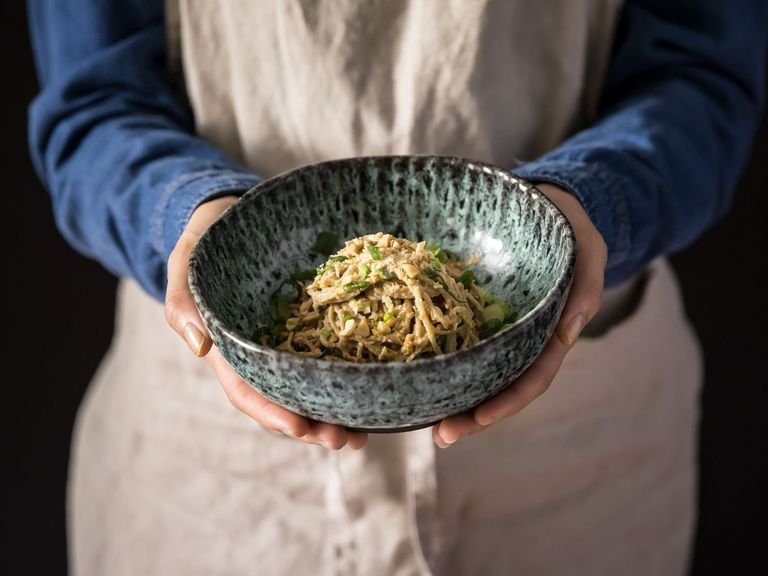

Fast Spicy Peanut Soba Noodles

A great recipe to make when you're in a rush or just want to pull from the pantry. If you don't have soba noodles, you can swap in your favorite thin wheat or rice noodles. Depending on the peanut butter you use, you will need more or less water to thin the sauce out, so start with what's suggested and use your intuition when adding more, half a tablespoon at a time.
Ingredients
- 200g Soba noodles
- 200g Roasted peanuts
- 4 tbsp Soy sauce
- 1.5 tbsp Sriracha
- 5 tbsp Water
- 1.5 tbsp Olive Oil
- 1 Scallion
- Pepper
Steps
- Prepare soba noodles according to package instructions. Drain, rinse under cold water, and set aside.
- Blend most of the peanuts into a smooth paste. Add soy sauce, sriracha, water, and olive oil to make a creamy sauce. Add more water as needed to keep it thin enough to coat the noodles.
- Chop remaining peanuts and thinly slice green onion.
- Mix noodles with peanut sauce in a serving bowl. Serve garnished with chopped peanuts and green onion. Season with pepper to taste. Enjoy!
Return to main page